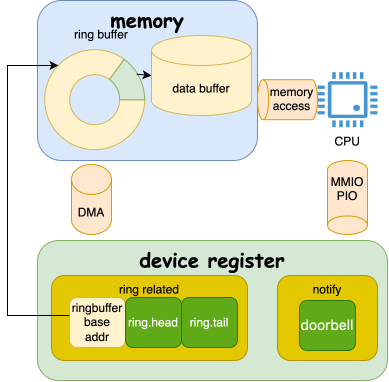
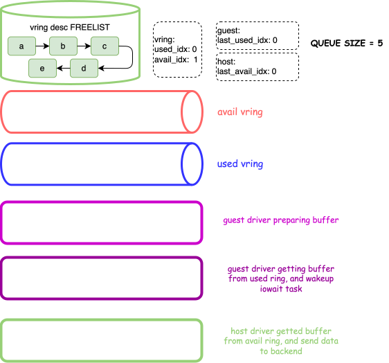
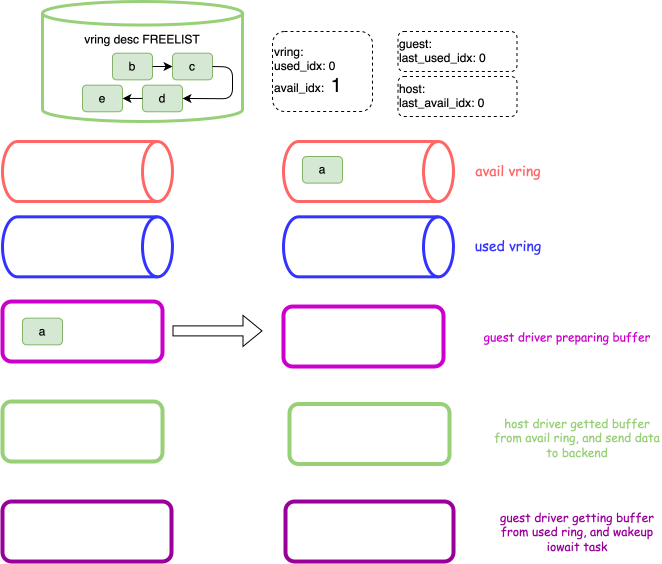
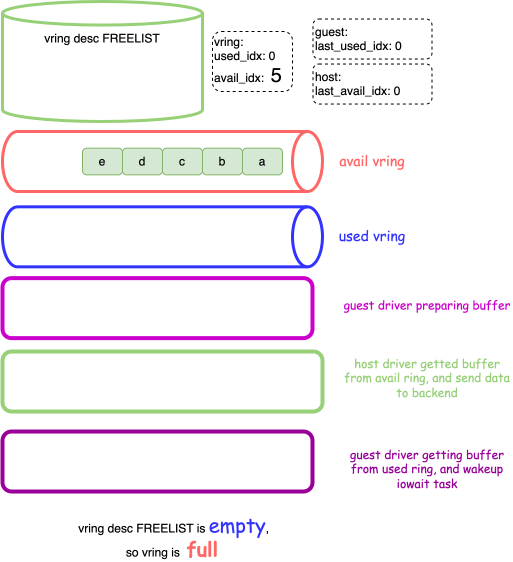
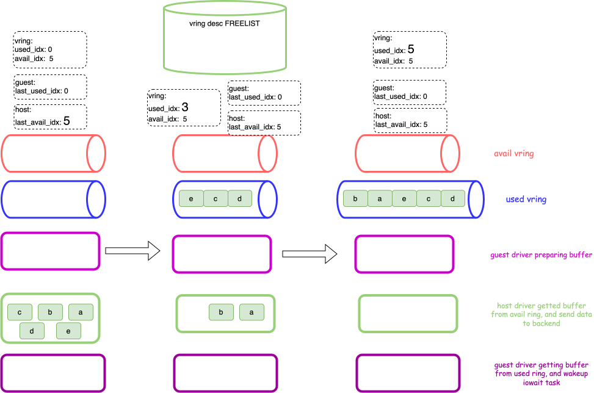
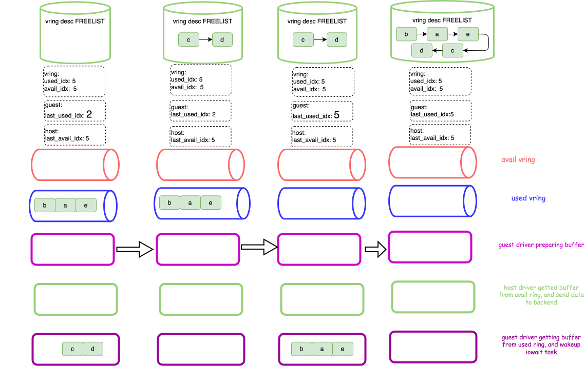

一文搞懵IO虚拟化之 -- virtio
overflow
virtio 起源于 2008 年的 virtio: Towards a De-Facto Standard For Virtual I/O Devices该论 文1,2, 而其诞生的背景是, Linux 内核作为guest支持高达8种虚拟化系统:
- Xen
- KVM
- VMware 的 VMI
- IBM 的 System p
- IBM 的 System z
- User Mode Linux
- lguest
- IBM 的遗留 iSeries
而之后，可能还会出现新的系统。每个platform都希望拥有自己的块设备, 网络和控制台驱 动程序, 有的时候还需要一个 boutique framebuffer, USB controller, host filesystem and virtual kitchen sink controller…另外，它们中很少有对驱动程序进行任何显著的 优化，并且提供了很多重复的但是往往略有不同的功能机。更重要的是，no-one seems particularly delighted with their drivers, or having to maintain them.(大家对维护 这个都没有热情). 所以，当时需要一个统一标准, 高效的半虚拟化设备来替代它们。
而2006年KVM出现后, 需求又更加迫切，因为KVM当时还没有一个虚拟化设备模型。使用模拟设备 性能非常受限。Rusty Russell 团队认为可以创建一个公通用，高效能在多种虚拟机和平台 运行的virtio IO 机制.
最终, 作者设计了两个完整的API:
- virtio-vring（传输层)
- NOTE: 往往定制化的传输机制会让自己的通用性更差:
- 针对某个hyperisor 或者架构
- 甚至经常为每一种设备单独定制
所以, virtio-vring的实现并不激进或者革命性。
- NOTE: 往往定制化的传输机制会让自己的通用性更差:
- Linux API for virtual I/O devices.
- device probing
- 提供feature negotiation来保证 device和driver之间的 向前/向后兼容.
- device configuration
- device probing
virtio: ABSTRACTION API
作者设计了一个抽象层:
- 通用的驱动程序
- 一系列函数指针
函数指针如下:
1
2
3
4
5
6
7
8
9
10
11
12
13
14
15
16
17
18
19
20
21
22
23
24
25
26
27
28
29
30
31
//from 6.15.0-rc6
struct virtio_config_ops {
void (*get)(struct virtio_device *vdev, unsigned offset,
void *buf, unsigned len);
void (*set)(struct virtio_device *vdev, unsigned offset,
const void *buf, unsigned len);
u32 (*generation)(struct virtio_device *vdev);
u8 (*get_status)(struct virtio_device *vdev);
void (*set_status)(struct virtio_device *vdev, u8 status);
void (*reset)(struct virtio_device *vdev);
u64 (*get_features)(struct virtio_device *vdev);
int (*finalize_features)(struct virtio_device *vdev);
const char *(*bus_name)(struct virtio_device *vdev);
// 老版本代码，下面的成员在virtqueue_ops
int (*find_vqs)(struct virtio_device *vdev, unsigned int nvqs,
struct virtqueue *vqs[],
struct virtqueue_info vqs_info[],
struct irq_affinity *desc);
void (*del_vqs)(struct virtio_device *);
void (*synchronize_cbs)(struct virtio_device *);
int (*set_vq_affinity)(struct virtqueue *vq,
const struct cpumask *cpu_mask);
const struct cpumask *(*get_vq_affinity)(struct virtio_device *vdev,
int index);
bool (*get_shm_region)(struct virtio_device *vdev,
struct virtio_shm_region *region, u8 id);
int (*disable_vq_and_reset)(struct virtqueue *vq);
int (*enable_vq_after_reset)(struct virtqueue *vq);
};
最初的驱动, 主要包括以下功能:
- features:
- get_features()
- finalize_features()
features bit 举例: 指示网络设备是否支持校验和卸载的 VIRTIO_NET_F_CSUM 特性位。
具体的协商步骤如下:
- driver 调用 get_features() 获取devices 的feature
- driver 在上面的集合中选择自己版本支持的features
- driver call finalize_features() to writeback subset features to devices
如果需要renegotiate 只能reset设备.
- PCI configuration space:
- get()
- set()
配置空间内容和具体的虚拟设备强相关，另外，可能包含一些特定的配置字段, 这些配置字段可能受features控制。例如，网络设备如果有VIRTIO_NET_F_MAC features bit(host 希望设备有特定的mac地址)，配置空间中才包含该配置字段.
- PCI configuration space: STATUS bits
- get_status()
- set_status()
该字段由guest来表示当前设备的探测状态。例如当达到
VIRTIO_CONFIG_S_DEVICE_OK状态时，表示guest已经完成device features probe. 此时host可以评估guest可以 支持哪些feature。 - devices reset
- reset()
重置设备: configuration space 和 status. 另外, 当执行reset操作时，缓冲区不应该被 覆盖，可以用来尝试在guest中恢复driver。
通过上面的接口设计，做到了configuration API和driver分离，另外和trasnport相关API 也是一套独立的接口，所以其三者相互分离的。
原文:
virtio-vring
virtqueue ops
虽然configuration API 很重要, 但是对性能的关键部分是实际的IO机制。作者将其 抽象为virtqueue. 而virtqueue的本质是一个由 driver (guest) produce buffer, 由 devices(host) consume buffer的队列。每个buffer 可以由多个只读，或者可读写的离散 的数据段组成的数组。virtqueue ops如下:
1
2
3
4
5
6
7
8
9
10
11
12
struct virtqueue_ops {
int (*add_buf)(struct virtqueue *vq,
struct scatterlist sg[],
unsigned int out_num,
unsigned int in_num,
void *data);
void (*kick)(struct virtqueue *vq);
void *(*get_buf)(struct virtqueue *vq,
unsigned int *len);
void (*disable_cb)(struct virtqueue *vq);
bool (*enable_cb)(struct virtqueue *vq);
};
- add_buf: add a new buffer to avail queue, 其中
data参数是一个token，当buffer已经 被consume时返回该值，用来标识该buffer. （是不是有点乱，这和vring的并行consume 有关, 下面会讲到) - get_buf: gets a used buffer. len 用来指示 driver侧向buffer中填充了多少有效 数据. 而返回值则是返回的
add_buf()的data参数(cookie). 上面也提到主要 的原因是 ` buffers are not necessarily used in order` - kick: 在缓冲区被加入到队列时，用来notify 对方(host devices). 另外，可以添加 多个buffer后，在发一次kick。（batching)
enable_cb,disable_cb:
启用禁用callback.
disable_cb 这相当于禁用中断。driver 会为每一个virtiqueue注册一个callback, 而这 些会在唤醒服务线程之前禁用掉这个回调(???啥服务线程1, todo). 从而减少vmm和guest的交互。
而enable_cb则表示开启中断（启用回调), 通常会driver处理完队列中的所有的待处理的请求 后调用。(used queue)
VRING
vring struct
介绍完相关的API之后，我们来看下用于transport 具体的数据结构. 该数据结构分为三部 分:
- descriptor array: 管理所有的descriptor
- avail ring: guest driver 用来指示哪些desc 已经准备好了，可以被 host device 使用
- used ring: host device 用来指示哪些 desc 已经被used, 可以被 guest driver 获取 数据，然后free.
我们结合 virtio-pci configuration space，来看下vring在configuration space的哪个 地方配置，还有其具体的数据结构:

配置空间中的comm configuration cap 中指示了
virtio_pci_comm_cfg结构在BAR空间 中的位置和offset, 该数据结构用来指示每个virtqueue的相关信息，其中包含其中包括 vring 的base address(queue_desc).NOTE
在支持多队列的场景下,
virtio_pci_comm_cfg.queue_select是一个可读写字段， 写该字段相当于一个select 操作。例如将该字段写1，然后在对virtio_pci_comm_cfg.queue_desc执行写操作相当于配置virtqueue 1的 vring base address.- queue_desc 指向的地址包含上面提到的三个数据结构。其虽然连续，但是为了优化 cacheline，每个数据结构中间可能会有padding field.
vring_avail,vring_used中都包含一个idx，但是没有head, tail区分。两者需要结合来表示 整个队列的状态
vring data transport external consume
我们知道, 在guest mode中运行程序是有额外代价的，这个代价主要源于 host emulation, 有些emulation 是异步的(一般的IO device emulation), 这些emulation的动作会放到非 vcpu thread, 而有些emulation 是同步的, 常见的是 VM-EXIT, 这些VM-EXIT event有些是 主动的，有些是被动的，但是均会让guest trap到host.
而对于模拟设备的虚拟化尤其如此: WHY ? 我们看下图.

对于CPU而言, 和IO 虚拟化相关的操作主要有几下几个:
- 访问 内存 中的ringbuffer，以及 ringbuffer 指向的相关数据.
- 通过MMIO PIO, 访问设备资源(一般是bar 指向的ioport, 或者 MMIO), 这些资源包括, 队列相关信息:
- ring.head,tail(ringbuffer base addr只会在初始化的时候配置)
- doorbell
- 设备向cpu notify(interrupt)
而哪些会造成VM-exit呢? 准确的说，都有可能造成，但是一般的memory access可以控制 (假如某个地址触发ept violation), KVM 建立映射之后，一般不会取消映射，也就是下次 访问该地址所在的page不会再触发vm-exit.除非触发内核的某些内存管理功能, 如swap, ksm等。所以这些操作带来的影响很小.
那剩下的就是 MMIO/PIO 访问 ring.head,tail, doorbell, interrupt, 其中doorbell和interrupt都属于notify, 这个没有办法避免(但是也可以优化， 下个章节会讲)。那最终剩余ring.head, ring.tail能不能优化。一个很明显 的方法，是将其转移到内存中。
NOTE
一般的物理设备都会将ring.head,tail 放到 device register上，不清楚其放在 设备上的好处。在chatgpt过程中，其提到, 可能是一些缓存一致性和 order问题.
但是仔细想想, 缓存一致性可以用
Strong Uncacheable (UC)的内存类型避免, 虽然在执行atomic相关操作时(一般是多个cpu当作 producer 操作ring.head), 会造成比较严重的性能问题. (UC lock , another word bus lock, 总之会锁数 据总线). 而至于乱序, 也可以靠内存屏障解决. 所以，有知道的大佬可以帮忙 解答下.
ok, 我们在来回顾virtio 的ring.idx:
- vring_desc.idx
- vring_avail.idx
其均在内存中。那在整个的数据传输过程中, 只剩余两个方向的 notify 会触发VM-exit了 !!
vring notify
notify的目的是, 当自己作为 producer 产生了数据，需要让对方([device <-> driver])处理时, 通知对方来感知这一行为。对于consume 来说, 这是被动的。 这里有一种主动的方式, 就是关闭notify, 由consume 侧一直循环观测 producer 的行为，看其是否产生了数据。这种称为poll。
对于两者而言, poll 的优点是延迟低, 但是需要消耗更多的计算资源.(如果不消耗 大量的计算资源的话，可能就适得其反).
而notify的好处是, 消耗较少的计算资源。但是坏处也很明显 : 延迟高. 并且会 打断当前的执行流程。
NOTE
我们这里简单思考下: 在notify方式中，之所以消耗的计算资源少，是因为不使用计算资 源来轮训 producer的状态, 将该计算资源分配给别的任务，所以当notify 来临时，会打 断当前的执行流。而打断过程的上下文切换是延迟的一部分原因。另一部分是, 当前执行 的上下文不允许被打断(常见的是关中断), 所以, 需要等待该上下文可以被打断时（开中 断），再触发notify. 这样就造成了更大的延迟。
无论在物理环境，还是在虚拟环境中, notify 有两个方向:
- driver->device : 设备特定
- device->driver : interrupt
但是两者的代价又不相同, 如下图:

在物理机上，两个方向的notify 均由纯硬件逻辑实现, 所以其notify的传输速度非常快. 而在虚拟机环境中, 两个方向的notify均需要 host 去模拟，另外更糟心的是两个方向的 notify 均会造成vm exit。严重影响guest vcpu的执行效率.
- driver->device: MMIO write: vmexit to trap into host emulation
- device->driver: 在virtio提出时, 中断虚拟化未支持完全(hardware), 并不能在cpu处于guest mode (
VMX Non-root operation)时，注入 virq, 但是又为 了保证尽量减少中断延迟，于是需要kick vcpu. 也就是强制打断该vcpu，使其产生 vmexit (一般的做法是send ipi to this cpu, 让vcpu因receive external interrupt而 vmexit.
所以, 基于这一差距, 作者设计出一套 notify-less(inspired by tickless) 的优化。而在之后更新的virtio协议的更高版本, 也在持续优化这方面。
sample of handle VirtIO
我们下面主要展示下, 在实际的数据传输时，vring, desc array 中的 数据流动.
在看图之前，我们先列举一些点:
初始状态
假设vring大小为5, 并且初始状态下:
- 所有的desc都是free的
- vring_avail.idx = 0
- vring_used.idx = 0
guest, host会自己保存一个idx，该idx主要用来自己作为消费者，上次”消费”到哪了:
- guest: last_used_idx = 0
- host: last_used_idx = 1
region of data residency
在desc从vring desc freelist中移除后, desc会驻留在vring中，但是这里，我们 额外抽象出三个区域, 用来表示当前数据处理到哪个阶段:
- guest driver从 vring desc freelist取出desc，并准备其buffer
- host driver 从avail vring 中获取到数据，并且正在将这些数据发送到IO后端
- guest driver 从used vring中收到数据，并且正在唤醒 iowait 相关task
这样
avail vring中保存的仅是HOST DEVICE未处理的数据, 而used vring保存的 仅是GUEST driver未处理的数据.vring full && vring empty
我们来思考下:
vring full 在处理流程中需要谁来关心，另外，怎么判断整个的 vring是 full状态.
思考中个人理解的答案
1 2 3 4 5 6 7 8
A: 只有guest driver 其需要关心vring full, 因为其最终控制着 vring desc freelist 的申请和释放. 另外, 怎么判断vring是否满也显而易见, 就是看vring desc freelist 中是否还有free 的成员。 所以vring full并不是指avail vring full, 或者 used vring full, 而就是表示所有 的desc正在处理，没有归还到 vring desc freelist 中.
vring empty
这里就不卖官司了. vring empty 需要落实到每个vring上(avail, used). 而且只有 consumer角色需要关心这些:
- guest driver: used vring is empty ?
- host device: avail vring is empty ?
题外话，可以先略过
NOTE
这里先跑题说些别的:
队列是否empty ? 这个判断条件需要 driver/device 在设备正常工作后一直判断 …
所以这里有两种方式实现:
- poll…
- NOTIFY
我们知道，poll的好处是延迟低，但是cpu 消耗高。而notify的好处是 cpu消耗低， 但是延迟稍微高一些. 但是在虚拟化场景下, notify 往往会造成vm-exit，从而带来 很大的额外开销.
这里先剧透下, 在整个的IO transport 过程中，virtio 优化的非常彻底，只有 notify 会造成vm-exit。所以，virtio 针对notify 也提出一些优化点. 总结成一个 单词 notify-less(inspired by tickless)
ok, 了解完上述点后，我们来看下面的图:

这是一个初始状态图，
- 所有的desc都在 vring desc FREELIST中。
- 所有的idx(包括last_xxx_idx)都是0。

- guest virtio driver收到blk 层的IO request, 从vring desc FREELIST中 申请了一个desc a, 并初始化a
- 初始化好a后，将a 放到 avail vring中. 此时,
avail_vring.idx=++0=1

guest driver收到了大量的IO 请求，此时将 vring desc FREELIST 的desc都申请完了, 此时vring 是 full 状态, 另外，guest driver 将所有的 desc均初始化完成, 并存放到vring此时:
1
2
3
4
5
i = 4
while i--:
avail_vring.idx++
avail_vring.idx is 5

host driver 通过某种途径感知到 avail vring中可能有东西(poll,notify), 于是比较 了下
[last_avail_idx(0), avail_idx(5)]发现确实有5个数据需要处理。于是， 从avail vring中将所有的desc 拿出来处理（每个desc的处理可以并行执行), 并将这些io request 转换成对后端的请求。
此时last_avail_idx 0->5.
- e,c,d 这三个请求率先完成, 将其存放到used vring中，此时 used_idx 0->3.
- b, a 这两个请求也完成了，将其也存放到 used vring 中, 此时 used_idx 3->5.

guest driver也通过某种途径感知到 used vring中可能有东西(poll, notify(interrupt)), 于是比较了下
[last_used_idx(0), used_idx(5)], 发现确实有5个io request 已经完 成，需要唤醒正在iowait的进程。首先处理c，d两个数据。此时， last_used_idx 0->2
- 处理完c, d两个数据后，正要准备处理剩余的数据时, 和因c, d io request阻塞的进程均被 唤醒，而且释放了该io buffer, 此时将desc 归还到 vring desc FREELIST中
- 继续处理剩余的b,a e三个io request, 此时 last_used_idx 2->5
- guest 中因virtqueue中的io request 阻塞的进程都被唤醒，并将desc 全都归还到 vring desc FREELIST中.
至此, guest 请求的5个io 均完成。
why virtio is so efficient
其他笔记
- avail
1 2 3 4
Note that there is padding such as to place this structure on a page separate from the available ring and descriptor array: this gives nice cache behavior and acknowledges that each side need only ever write to one part of the virtqueue structure.
- suppress notifications
1 2 3 4 5 6 7 8 9 10
Note the vring_used flags and the vring_avail flags: these are currently used to suppress notifications. For example, the used flags field is used by the host to tell the guest that no kick is necessary when it adds buffers: as the kick requires a vmexit, this can be an important optimization, and the KVM implementation uses this with a timer for network transmission exit mitigation. Similarly, the avail flags field is used by the guest network driver to advise that further interrupts are not required (i.e., disable_cb and enable_cb set and unset this bit).
参考链接
- virtio: Towards a De-Facto Standard For Virtual I/O Devices
- virtio 虚拟化系列之一：从 virtio 论文开始
- what it is that makes the Qemu hardware emulation so slow
TODO
the virtqueue callback might disable further callbacks before waking a service thread.service thread ?? what ??